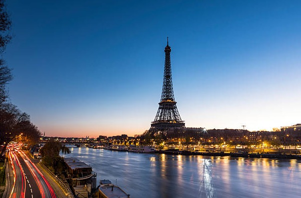

Exploring Paris
Paris, the city of lights, offers a perfect blend of history, culture, and beauty. From the Eiffel Tower to the Louvre Museum, Paris has something for everyone.
Travel Tips for Paris:
- Learn a few basic French phrases to communicate better with locals.
- Book tickets for major attractions in advance to avoid long queues.
- Use public transport to get around the city efficiently.
- Don't forget to try local pastries like croissants and macarons.